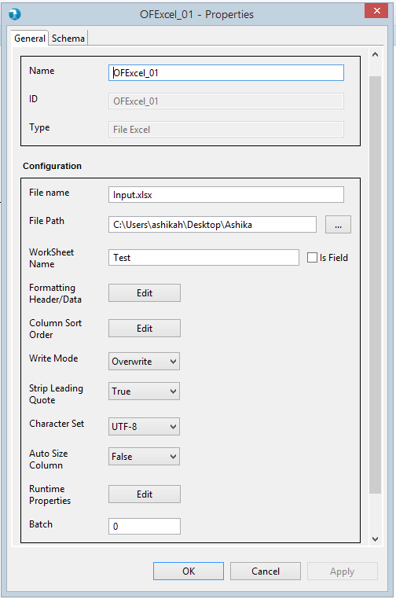
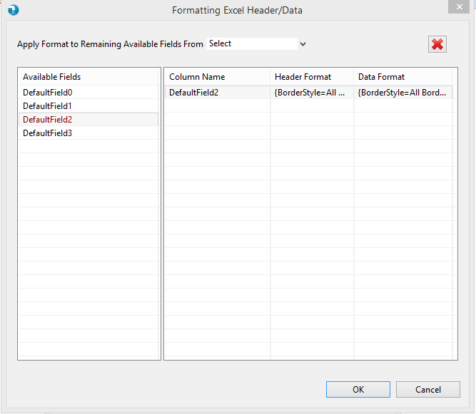
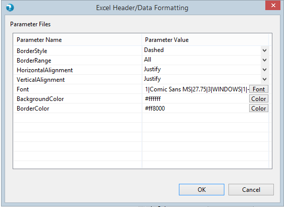
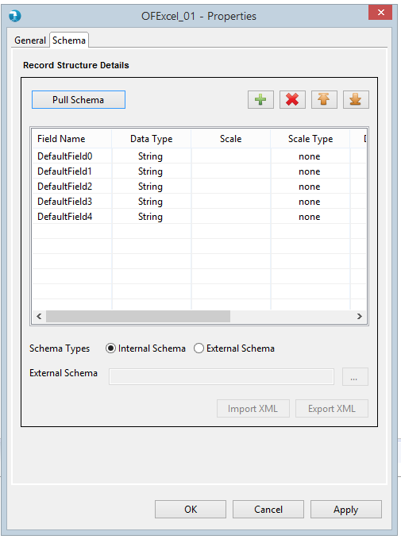
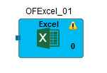
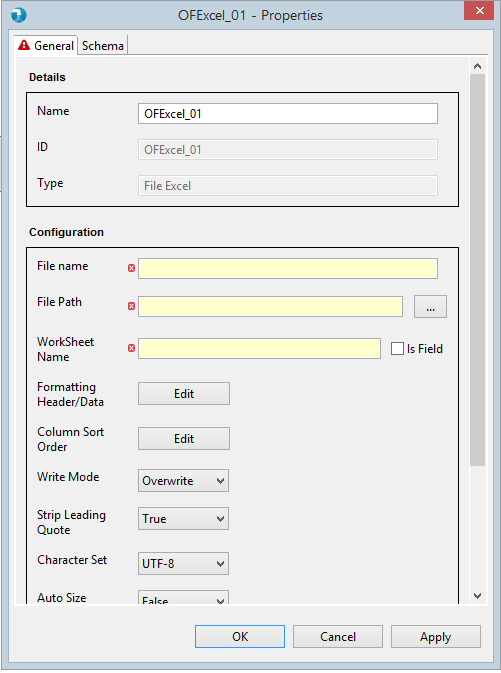
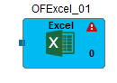

Properties for the Output File Excel component can be viewed by Double click the component on canvas. The properties contain a 'General' tab and a 'Schema' tab. Common and mandatory properties are present in the General tab. Schema displays option to accept the field schema i.e. field name, Data type, scale etc.

- Name - The Name field will specify the name of the component as desired by the user.
- ID - ID field will specify unique id for every component.
- Type - Type further categorizes the component to detailed operation that it intends to perform. Here it is of type File Excel.
- Formatting Header/Data - Edit button should be provided to user to open new Window to opt Formatting Header/Data. In this window, provide options to user to format the header and data for the Excel sheet.Below is the sample snapshot of Header/Data Formaating Window:

User can select the specific fields for customizing the header and data format, by clicking on the cell editor of the Header and Data Column. On clicking the button, Header and Data format window will get opened. User can provide details such as font,font size, bold, italic, border etc.
Below is the snippet :

- Runtime Properties - Runtime properties are used to override the Hadoop configurations specific to Output File Excel component at run time. User is required to enter the Property Name and Value in the runtime properties grid.
Check How to pass Hadoop properties to component

- Batch - Batch simply accepts a numeric number starting from 0 to maximum 99 and signifies the batch this component will execute in. By default this is 0.
Schema is mandatory for Output File Excel component. Schema tab defines the record format on the out port of the Output File Excel component. A field in schema has multiple attributes as described below.

- Internal - User is provided a Grid to enter the internal schema of the Output File Excel.
- Field Name - User needs to enter all the Field names in this column.
- Data type - By default "string" Data type has been selected for any field added to the Grid. User can select from different Data type values like "integer", "double", "float" etc.
- Date Format - User can specify desired date format like "YY-DD-MM", "YYYYMMDD" etc for a date field in this column. Refer to java date formats page for acceptable date formats.
- Precision - Precision for a bigdecimal field can be specified here.
- Scale - Scale for a bigdecimal field can be specified here.
- Scale Type - Scale Type accepts values as implicit or explicit for bigdecimal field and none for other data types. Explicit considers the length of ' . ' and implicit ignores length of ' . ' for the bigdecimal field.
- Field Description - User can specify field description.
- External - User can provide an external Hydrograph Schema file of XML format. A text box is provided to either manually type or use the Browse button to select the schema file from File system. The External schema file path is resolved during run time and replaced with the contents of the file in the Job XML.
The Output File Excel components applies validations to the mandatory fields. Upon placing the
Output File Excel component on job canvas for the first time (from component palette), the component shows up a warning icon as
mandatory properties are not provided.

The properties window also displays error icon on mandatory fields if it has an incorrect value. The error icon
is displayed on the tab as well, if any of the field within the tab has some error.

If the properties window has some error even after user visit's it once, then the warning icon on the Output File Excel
component on the job canvas changes to error icon. This error icon is removed only when all the mandatory fields are supplied
with correct values.
